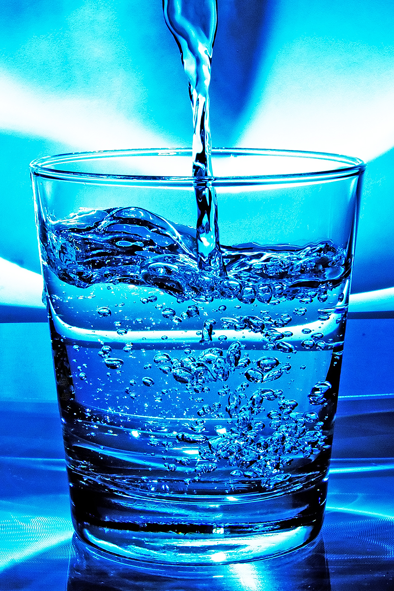
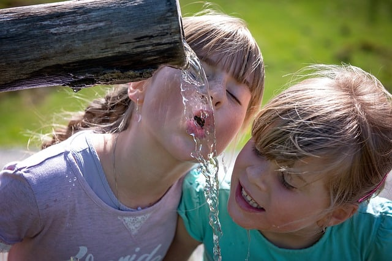

5 Little Known Benefits of Drinking Water
The benefits of drinking water have been much discussed in the media.
Water helps keep you hydrated, which is important because every single cell in your body needs
it in order to absorb nutrients and expel waste products.
But what are some of the less well known benefits of drinking water?
1) Drinking Water Keeps You Young
Drinking plenty of water is great for your skin. If you don't drink enough water, you'll suffer from dry skin, and ,
you'll be likely to use more creams and lotions to moisturize. However, creams and lotions don't strike at the
root of the problem. Drinking plenty of water keeps your skin moisturized and reduces the appearance of fine
lines and wrinkles.
If you don't drink enough water, your body will try to retain it in order to conserve resources
. This retention makes your skin puffy and can even lead to bloating.
2) Drinking Water Helps You Lose Weight
There's a reason why most diets and fitness programs ask you to drink a lot of water. One of the benefits of drinking water is that it helps you lose weight.
Water suppresses your appetite, so you don't eat as much. Drinking plenty of water also prevents fluid retention, because your body won't try to retain water if it's getting enough.
Drinking water also helps your body burn stored fat. If you're not drinking enough water, your liver will be forced to help your kidneys detoxify your body. When you drink plenty of water, your kidneys don't need any extra help, so your liver will be able to metabolize stored fat more efficiently. Drinking water flushes toxins from your body and prevents constipation.
3) Drinking Water Helps You Build Muscle
Another benefit of drinking water is that it makes your muscles stronger. That's because water carries oxygen to the cells of your body, including those of your muscles. Drinking plenty of water enables your muscles to work harder and longer before they feel tired, and this can help you build muscle.
4) Drinking Water Makes You Smarter
Drinking water can increase your cognitive function. Your brain needs a lot of oxygen in order to function at optimum levels. Drinking plenty of water ensures that your brain gets all the oxygen it needs. Drinking eight to ten cups of water per day can improve your levels of cognitive performance by as much as 30%!
Drinking plenty of water also supports nerve function. It ensures that your body's electrolyte levels remain high enough to allow your nerves to relay messages to and from the brain in the way they were meant to.
5) Drinking Water Is Good for Your Joints
One of the lesser known benefits of drinking water is that it helps keep your joints strong, healthy and lubricated. Your joints need moisture in order to remain strong and flexible, so that your movements are smooth and pain free.
7 Science-Based Health Benefits of Drinking Enough Water
The human body comprises around 60% water.
It’s commonly recommended that you drink eight 8-ounce (237-mL) glasses of water per day (the 8×8 rule).
Although there’s little science behind this specific rule, staying hydrated is important.
Here are 7 evidence-based health benefits of drinking plenty of water.

>1. Helps maximize physical performance
If you dont stay hydrated, your physical performance can suffer.
This is particularly important during intense exercise or high heat.
Dehydration can have a noticeable effect if you lose as little as 2% of your body’s water content. However, it isn’t uncommon for athletes to lose as much as 6–10% of their water weight via sweat (1Trusted Source, 2Trusted Source).
This can lead to altered body temperature control, reduced motivation, and increased fatigue. It can also make exercise feel much more difficult, both physically and mentally (3).
Optimal hydration has been shown to prevent this from happening, and it may even reduce the oxidative stress that occurs during high intensity exercise. This isn’t surprising when you consider that muscle is about 80% water (4Trusted Source, 5Trusted Source).
If you exercise intensely and tend to sweat, staying hydrated can help you perform at your absolute best.
SUMMARY
Losing as little as 2% of your body’s water content can significantly impair your physical performance.
2. Significantly affects energy levels and brain function
Your brain is strongly influenced by your hydration status.
Studies show that even mild dehydration, such as the loss of 1–3% of body weight, can impair many aspects of brain function.
In a study in young women, researchers found that fluid loss of 1.4% after exercise impaired both mood and concentration. It also increased the frequency of headaches (6Trusted Source).
Many members of this same research team conducted a similar study in young men. They found that fluid loss of 1.6% was detrimental to working memory and increased feelings of anxiety and fatigue (7).
A fluid loss of 1–3% equals about 1.5–4.5 pounds (0.5–2 kg) of body weight loss for a person weighing 150 pounds (68 kg). This can easily occur through normal daily activities, let alone during exercise or high heat.
Many other studies, with subjects ranging from children to older adults, have shown that mild dehydration can impair mood, memory, and brain performance (8, 9Trusted Source, 10, 11Trusted Source, 12, 13).
SUMMARY
Mild dehydration (fluid loss of 1–3%) can impair energy levels, impair mood, and lead to major reductions in memory and brain performance.
3. May help prevent and treat headaches
Dehydration can trigger headaches and migraine in some individuals (14Trusted Source, 15Trusted Source).
Research has shown that a headache is one of the most common symptoms of dehydration.
What’s more, some studies have shown that drinking water can help relieve headaches in those who experience frequent headaches.
A study in 102 men found that drinking an additional 50.7 ounces (1.5 liters) of water per day resulted in significant improvements on the Migraine-Specific Quality of Life scale, a scoring system for migraine symptoms (16).
Plus, 47% of the men who drank more water reported headache improvement, while only 25% of the men in the control group reported this effect (16).
However, not all studies agree, and researchers have concluded that because of the lack of high quality studies, more research is needed to confirm how increasing hydration may help improve headache symptoms and decrease headache frequency (17Trusted Source).
SUMMARY
Drinking water may help reduce headaches and headache symptoms. However, more high quality research is needed to confirm this potential benefit.
4. May help relieve constipation
Constipation is a common problem that’s characterized by infrequent bowel movements and difficulty passing stool.
Increasing fluid intake is often recommended as a part of the treatment protocol, and there’s some evidence to back this up.
Low water consumption appears to be a risk factor for constipation in both younger and older individuals (18Trusted Source, 19Trusted Source).
Increasing hydration may help decrease constipation.
Mineral water may be a particularly beneficial beverage for those with constipation.
Studies have shown that mineral water that’s rich in magnesium and sodium improves bowel movement frequency and consistency in people with constipation (20Trusted Source, 21).
SUMMARY
Drinking plenty of water may help prevent and relieve constipation, especially in people who generally don’t drink enough water.
5. May help treat kidney stones
Urinary stones are painful clumps of mineral crystal that form in the urinary system.
The most common form is kidney stones, which form in the kidneys.
There’s limited evidence that water intake can help prevent recurrence in people who have previously gotten kidney stones (22, 23).
Higher fluid intake increases the volume of urine passing through the kidneys. This dilutes the concentration of minerals, so they’re less likely to crystallize and form clumps.
Water may also help prevent the initial formation of stones, but studies are required to confirm this.
SUMMARY
Increased water intake appears to decrease the risk of kidney stone formation.
Watch More
6. Helps prevent hangovers
A hangover refers to the unpleasant symptoms experienced after drinking alcohol.
Alcohol is a diuretic, so it makes you lose more water than you take in. This can lead to dehydration (24, 25Trusted Source, 26Trusted Source).
Although dehydration isn’t the main cause of hangovers, it can cause symptoms like thirst, fatigue, headache, and dry mouth.
Good ways to reduce hangovers are to drink a glass of water between drinks and have at least one big glass of water before going to bed.
SUMMARY
Hangovers are partly caused by dehydration, and drinking water can help reduce some of the main symptoms of hangovers.
7. Can aid weight loss
Drinking plenty of water can help you lose weight.
This is because water can increase satiety and boost your metabolic rate.
Some evidence suggests that increasing water intake can promote weight loss by slightly increasing your metabolism, which can increase the number of calories you burn on a daily basis.
A 2013 study in 50 young women with overweight demonstrated that drinking an additional 16.9 ounces (500 mL) of water 3 times per day before meals for 8 weeks led to significant reductions in body weight and body fat compared with their pre-study measurements (27Trusted Source).
The timing is important too. Drinking water half an hour before meals is the most effective. It can make you feel more full so that you eat fewer calories (28Trusted Source, 29Trusted Source).
In one study, dieters who drank 16.9 ounces (0.5 liters) of water before meals lost 44% more weight over a period of 12 weeks than dieters who didn’t drink water before meals (30Trusted Source).
20 Incredible Health Benefits of Drinking Water Every Day

1. Prevents constipation
If you do not drink enough water, you are more likely to experience constipation. On the other hand, if you constipated, drinking plain water and carbonated water can help ease symptoms. If you are eating balanced foods without taking adequate water, you will regularly suffer constipation. Drinking water regularly also helps to prevent constipation by ensuring unconstrained bowel movements.
2. Aids digestion
Taking water before, during, and after a meal helps your digestive system to break down the food you eat more easily. Therefore, if you frequently experience digestive system problems, you should drink water immediately you eat. Consuming too much sodium or fiber without drinking adequate water can cause bloating. Bloating, for instance, can be treated by drinking a lot of water or peppermint tea.
3. Supports kidneys health
Individuals struggling with kidney stones are increasingly becoming a big problem in the health industry. More people are becoming victims of the deadly disease, but you can keep it at bay by drinking water. Water dilutes minerals and salts that can concentrate in the kidneys to become stones.Your kidneys play an important role in regulating blood pressure, maintaining water levels, and filtering waste. Therefore, drinking water is essential for your overall health.
4. Boosts skin health
If you want to look younger, you should drink adequate water. Drinking water plumps up your skin cells, minimizing the appearance of wrinkles and fine lines, which keeps you looking younger. Drinking water also keeps your skin glowing by flushing out impurities and toxins that dull your skin from the body. Drinking warm, vitamin c rich lemon water on a daily basis is a perfect remedy that will keep your skin glowing.
5. Makes you work out better
Before hitting the gym or starting your home workouts, you should always strive to first consume adequate water. Although most people tend to drink water during workout sessions, experts advise that you should take adequate water before, during and after workouts. Drinking adequate water before workouts make you workout longer and avoid muscle cramps.
Although the adequate amount of water that you should drink depends on various factors such as weather, activity level and how much you sweat, you should drink at least two cups of water about two hours before working out and five to ten ounces of water every 20 minutes during your workout sessions.
6. Improves mood
If your mood is low, you should consider taking a glass of water. Dehydration triggers stress and thus, drinking water on a regular basis makes you less prone to feeling stressed. It has been proven that cognitive problems, negative mood, fatigue and anger increase when you are dehydrated. To avoid stress and improve your mood, you should not wait until you are thirsty to drink water. Thirst is a symptom of dehydration.
7. Keeps you energized
With the two-thirds of the human body comprising of water, any form of dehydration negatively affects the functionality of most body organs. Dehydration is associated with increased anger, fatigue, and confusion, as well as decreased vigor. You need to drink adequate water for your body organs to work properly. Drinking water also helps to maintain healthy blood pressure and heart rate.
Your immune system also needs adequate fluid to produce lymph, which plays an essential role in keeping you healthy. If your body organs are not functioning effectively, you will feel fatigued and weak. Drinking water ensures that your body organs are functioning optimally, which keeps you energized.
8. Helps you lose weight
Drinking water helps your body maintain healthy body weight. In an era where people are highly concerned about their appearance, drinking adequate water can help you achieve your dream appearance.
See also Catastrophic Effects of Littering on Humans, Animals and the Environment
Drinking cold water helps to raise metabolism as the body must produce more energy to increase temperature, which makes your body burn more calories. Drinking water also eliminates the need to take beverages high in sugar that can make you gain weight.
9. Boosts the immune system
The importance of drinking water on your health cannot be better highlighted by the fact that drinking water helps fight the flu and its symptoms. Water plays a vital role in boosting the immune system in several ways that include flushing harmful toxins from your body and transporting oxygen to the body cells, ensuring proper functioning of the body.
10. Flushes out toxins
1
Water plays a critical role in keeping your body healthy and skin attractive. The most noticeable and identified role played by water in the body according to scientists is flushing out toxins. Water helps your body get rid of harmful toxins through sweat and urine. And by getting rid of toxins, water helps to keep the kidneys and urinary tract healthy.
Your body is a fully functioning machine that uses the lung, kidneys, and liver to detoxify. Furthermore, after the organs have detoxed the body, they heavily rely on water to get the toxins out of the body. For this reason, you should always ensure that you are drinking adequate water to get rid of toxins from your body fully.
Boosts your brain power
11.
People tend to drink a cup of coffee when they are looking for a mental performance boost. However, what they do not understand is that taking a glass of water is more beneficial to your brain than taking a cup of coffee. With 73-percent of your brain made up of water, drinking water regularly helps you focus, think, concentrate, and stay alert.
Moreover, studies have shown that being dehydrated by just two-percent affects your performance in tasks that require psychomotor, attention, and immediate memory skills. Dehydration negatively affects your brainpower by reducing your cognitive and motor skills, increase your sensitivity to pain, reduce your memory power and affect your mood.
12. Prevents headaches
Dehydration causes headaches, and this is because of the influence of dehydration on brain function. In other words, water is an essential component in the functionality of your brain. In addition to boosting brainpower, drinking water also helps to prevent and relieve headaches caused by dehydration.
According to Medical News Today, dehydration headache occurs when your body loses essential fluids affecting brain functionality. When dehydration occurs, the brain loses essential fluids resulting in a temporary shrink. The shrink causes the brain to pull away from the skull causing pain!
13. Prevents cramps and sprains
Dehydration is also associated with cramping and can lead to sprains. Water acts as a natural lubricant for your joints and muscles making them less prone to sprains and injuries. By drinking water, it makes your muscles and joints more flexible reducing the likeliness of experiencing sprains and injuries.
See also Organic Gardening, it's Benefits and Formation
14. Regulates body temperature
Water is essential in regulating your body temperature. When it gets hot, your body uses sweat to cool down. Drinking water replenishes the lost fluid through sweat ensuring that you are comfortable in a hot environment.
15. Prevents bad breath
Surprisingly, and something that most people don’t know is that in addition to the kind of food you eat, bad breath is usually a sign of depriving yourself enough drinking water. Drinking water frequently and after easting significantly aids in washing away oral bacteria and leftover food particles that cause bad breath.
16. Good for your heart
Drinking a sufficient amount of water helps to maintain the proper viscosity of blood and plasma as well as the distribution of fibrinogen thereby ensuring good heart health.
17. Ensures efficient transportation of minerals and nutrients throughout the body
Without water, it would be impossible for nutrients and minerals to reach all your cells. The minerals and nutrients dissolve in the water making it possible for them to reach all your body parts.
18. It aids in forming saliva and mucus that keeps your eyes, nose, and mouth moist
Water is a major component of human saliva and mucus. Saliva and mucus play very vital roles in the body by keeping the mouth, eyes, and nose moist thus preventing friction and cell damage. If one gets constantly dehydrated, it can make the body incapable of producing enough saliva and mucus, which can result in cell damage and friction in the eyes, nose, and mouth. Dry mouth and itchy eyes, for instance, can be exacerbated by the lack of drinking adequate water on a daily basis.
19. Helps fight sickness
Drinking adequate water can help fight off major diseases because water helps in keeping various body nutrients and minerals in balance. If you are drinking enough water daily, you are hence less likely to suffer discomforts and illnesses such as constipation, migraines, urinary tract infection, kidney stones, exercise-induced asthma, hypertension, and even diabetes.
20. Improves oxygen circulation
To improve the circulation of oxygen in your body, you should always drink water throughout the day. Water as an essential component of your blood and helps to transport oxygen to every part of the body. As such, it ensures one is happy, energized, and in good health as oxygen aids in oxidation and metabolism.
Furthermore, if some parts of your body such as the brain, nerves, or body cells fail to get adequate oxygen, it can lead to serious illnesses or even death.